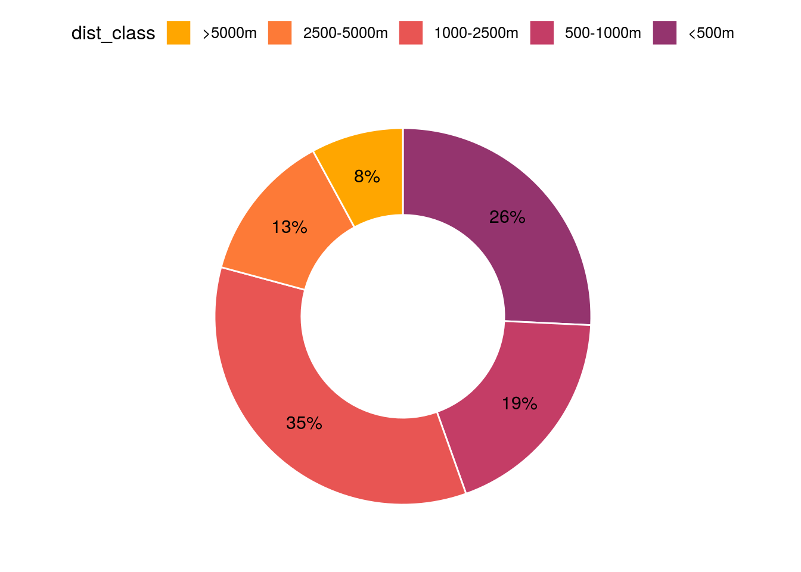

13 Figure 4: Distance to fireworks
Finally, we also want to visualize how far away from fireworks birds are located. As we calculate them from a raster, when birds are close to fireworks, distances are increasing in discrete steps, whereas when they’re further away it becomes more continuous (more possible distances with more grid points). As this makes for an ugly plot, we stick to a good ol’ donutchart to visualize the changing distributions of birds relative to fireworks.
13.1 Processing environment
library(ggplot2)
library(dplyr)
library(tidyr)
library(tibble)
library(ggpubr)
library(forcats)
library(stringr)
selected_scan <- load("data/processed/pvol_selection.RData")
scan_dt <- str_extract(basename(pvol_dhl_path), "[0-9]{12}")
data <- readRDS(file.path("data/processed/composite-ppis/500m/", paste0(scan_dt, ".RDS")))$data@data
clean_data <- function(data, max_distance) {
mdl_variables <- c("VIR", "dist_radar", "total_biomass", "total_crs",
"agricultural", "semiopen", "forests", "wetlands", "waterbodies", "urban",
"dist_urban", "human_pop", "disturb_pot", "pixel", "coverage", "class", "x", "y",
"wb_area_nr", "ptt_route")
log10_variables <- c("dist_urban", "human_pop", "total_biomass", "dist_urban", "disturb_pot")
data %>%
dplyr::filter(coverage > 0,
class != 1,
total_biomass > 0,
dist_radar < max_distance,
urban < 0.1) %>%
mutate(VIR = replace_na(VIR, 0.1),
VIR = if_else(VIR == 0, 0.1, VIR),
VIR = log10(VIR),
disturb_pot = human_pop / dist_urban,
total_biomass = total_biomass / 1000) %>%
dplyr::select(all_of(mdl_variables)) %>%
# filter_all(all_vars(is.finite(.))) %>%
rename(total_rcs = total_crs) %>%
identity() -> data_cleaned
data_cleaned
}
data_cleaned <- clean_data(data, 66000)
wb_year <- 2018
ptt_year <- 2017
ptt <- readRDS("data/processed/sovon/ptt.RDS") %>% filter(year == ptt_year)
wb <- readRDS("data/processed/sovon/wb.RDS") %>% filter(year == wb_year)
data_cleaned %>%
select(dist_urban, wb_area_nr, ptt_route) %>%
group_by(wb_area_nr) %>%
mutate(mean_dist_urban_wb = mean(dist_urban, na.rm = TRUE)) %>%
ungroup() %>%
group_by(ptt_route) %>%
mutate(mean_dist_urban_ptt = if_else(!is.na(ptt_route), mean(dist_urban, na.rm = TRUE), NA_real_)) %>%
ungroup() %>%
distinct(wb_area_nr, ptt_route, .keep_all = TRUE) %>%
mutate(wb = !is.na(wb_area_nr),
ptt = !is.na(ptt_route),
type = case_when(
wb & ptt ~ "both",
wb ~ "wb",
ptt ~ "ptt"
)) %>%
filter(type != "both",
dist_urban > 250) %>%
identity() -> distances
head(distances, 10)| dist_urban | wb_area_nr | ptt_route | mean_dist_urban_wb | mean_dist_urban_ptt | wb | ptt | type |
|---|---|---|---|---|---|---|---|
| 7433.034 | NZ3332 | NA | 5949.3698 | NA | TRUE | FALSE | wb |
| 5700.877 | WG2173 | NA | 6518.8415 | NA | TRUE | FALSE | wb |
| 3905.125 | WG2175 | NA | 3207.1152 | NA | TRUE | FALSE | wb |
| 2549.510 | WG2172 | NA | 1993.4263 | NA | TRUE | FALSE | wb |
| 4924.429 | WG2142 | NA | 4223.8355 | NA | TRUE | FALSE | wb |
| 5700.877 | WG2151 | NA | 6586.6381 | NA | TRUE | FALSE | wb |
| 7648.529 | WG2152 | NA | 8637.4431 | NA | TRUE | FALSE | wb |
| 1118.034 | WG2130 | NA | 823.6068 | NA | TRUE | FALSE | wb |
| 2061.553 | WG2141 | NA | 1974.4428 | NA | TRUE | FALSE | wb |
| 2236.068 | WG2112 | NA | 1353.6900 | NA | TRUE | FALSE | wb |
ptt %>%
group_by(route) %>%
summarise(total_birds_ptt = sum(number), .groups = "drop_last") -> ptt_birds
wb %>%
group_by(area_nr) %>%
summarise(total_birds_wb = sum(number), .groups = "drop_last") -> wb_birds
distances %>%
left_join(ptt_birds, by = c("ptt_route" = "route")) %>%
left_join(wb_birds, by = c("wb_area_nr" = "area_nr")) %>%
rowwise() %>%
mutate(total_birds = sum(c(total_birds_wb, total_birds_ptt), na.rm = TRUE)) %>%
identity() -> birds
birds %>%
arrange(dist_urban) %>%
group_by(dist_urban) %>%
mutate(total_birds = sum(total_birds)) %>%
ungroup() %>%
distinct(dist_urban, total_birds) %>%
mutate(dist_class = case_when(
dist_urban <= 500 ~ "<500m",
dist_urban > 500 & dist_urban <= 1000 ~ "500-1000m",
dist_urban > 1000 & dist_urban <= 2500 ~ "1000-2500m",
dist_urban > 2500 & dist_urban <= 5000 ~ "2500-5000m",
dist_urban > 5000 ~ ">5000m"
)) %>%
group_by(dist_class) %>%
summarise(total_birds_interval = sum(total_birds), .groups = "drop_last") %>%
mutate(dist = case_when(dist_class == "<500m" ~ 1,
dist_class == "500-1000m" ~ 2,
dist_class == "1000-2500m" ~ 3,
dist_class == "2500-5000m" ~ 4,
dist_class == ">5000m" ~ 5),
dist_class = fct_reorder(as.factor(dist_class), dist, .desc = TRUE)) %>%
ungroup() %>%
mutate(total_prop = round((total_birds_interval / sum(total_birds_interval)) * 100),
total_prop_str = paste0(total_prop, "%"),
ymax = cumsum(total_prop),
ymin = c(0, head(ymax, n=-1))) %>%
arrange(dist) %>%
identity() %>%
ggdonutchart(x = "total_prop", label = "total_prop_str", lab.pos = "in", fill = "dist_class", color = "white", lab.adjust = 0,
palette = rev(c("#94346e", "#c43d66", "#e85553", "#fd7a37", "#ffa600")))
# colorscale made using https://learnui.design/tools/data-color-picker.html and #94346e as starting point
ggsave("data/plots/distances.pdf", width = 4, height = 4)